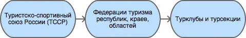
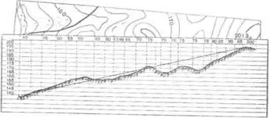
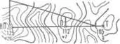

Билеты школы БУ турклуба МГУ 2016 г.
Attention
Написанное ниже не является полными ответами на вопросы.
Написанное ниже не отменяет того что вы должны знать лекции, а помогает натолкнуть вас на нужные мысли и помочь вспомнить.
Написанное ниже не дает никакой гарантии успешной сдачи экзамена.
Теория
Билет 1
Вопрос
Организационная структура российского туристского движения. Туристско-спортивные союзы. Городские и районные клубы.
Техника движения и обеспечение безопасности при движении по тропам и травянистому рельефу.
Способы и средства транспортировки пострадавшего.
Ответ
Наиболее крупная единица – Туристско-спортивный союз России (ТССР). Основной целью деятельности ТССР является объединение различных туристских движений в РФ в туристско-спортивный союз.
Клубы создаются в целях пропаганды и внедрения здорового образа жизни средствами спортивно-оздоровительного туризма, развития нравственных, интеллектуальных, физических способностей личности, вовлечения широких слоев населения в регулярные занятия активными формами туризма в условиях природной среды.
Основные задачи клуба:
Проведение спортивных походов, путешествий, оздоровительных лагерей, соревнований и других массовых мероприятий, обеспечивающих совершенствование туристских навыков.
Подготовка кадров для спортивно-оздоровительного туризма.
Обучение основам туризма, краеведения и экологии.
Реализация программ по развитию территориального туризма, диагностирование и развитие различных направлений туристско-оздоровительной деятельности.
Развитие материально-финансовой базы туризма.
Клуб имеет право устанавливать прямые связи с учреждениями, предприятиями, организациями, в том числе и зарубежными.
Клуб осуществляет свою деятельность в соответствии с действующим законодательством РФ, настоящим Типовым положением и собственным уставом.
Клуб несет в установленном законодательством РФ порядке ответственность за невыполнение функций, определенных его уставом, а также за иные нарушения, предусмотренные законодательством РФ.
Для реализации задач клуб:
организует и проводит спортивные походы и путешествия;
осуществляет организационную, учебно-методическую и консультационную работу по развитию массового спортивно-оздоровительного туризма;
проводит туристские слеты, оздоровительные лагеря, фестивали, соревнования по технике туризма, экскурсии и другие туристские мероприятия;
проводит учебные мероприятия по подготовке, переподготовке и повышению квалификации туристских спортивно-оздоровительных кадров;
осуществляет координацию совместной деятельности туристских секций независимо от их ведомственной принадлежности;
оказывает помощь учреждениям образования по развитию детского и молодежного туризма;
осуществляет международные связи и туристские обмены с зарубежными туристскими, спортивными и иными организациями;
оказывает платные услуги, организует другую хозяйственную деятельность.
Опасности травянистых склонов:
мокрые склоны
заснеженные склоны
обледенелые склоны
кустарниковые заросли
склоны под разрушающимися скалами
склоны под «живыми» осыпями
склоны над обрывами (скалами, «бараньими лбами»)
Технические приёмы:
Использование естественных неровностей (кочек, камней) для постановки ступни горизонтально для большей устойчивости и плавности движения.
Туловище должно оставаться вертикальным
В случае крутых склонов или мокрой травы возможно использование кошек, ледорубов и провешивание перил.
Способы транспортировки пострадавшего зависит от вида травмы, их тяжести, а так же времени транспортировки.
носилки (мягкие, жесткие)
на себе (на ремнях, в рюкзаке, на руках)(возможно участие нескольких человек)
волокуши
{kind=link}
Билет 2
Вопрос
Туристские слеты и соревнования. Цели и задачи. Порядок проведения. Судейская коллегия.
Техника движения и обеспечение безопасности при движении по осыпному рельефу.
Аптечка похода выходного дня. Ее состав и назначение компонентов набора.
Ответ
Цель слетов – пропаганда туризма, обмен опытом организационной работы. Организация, проводящая слет, обязана: создать оргкомитет; утвердить главную судейскую коллегию; продумать материально-техническое, транспортное, хозяйственное и медицинское обеспечение слета; обеспечить безопасность; получить разрешение местных организаций на проведение слета.
Судейская коллегия собирается заранее и принимает участие в выборе места соревнований, разработке условий, планировании дистанций, а главное – в комплектовании судейских бригад.
Осыпь – это камни. Самое главное – равновесие.
По размеру камней:
мелкая (размером с кулак)
средняя (размером с ботинок)
крупная (камни крупнее 1м в диаметре)
По подвижности
живые
старые
слежавшиеся
Передвигаться по осыпят нужно плотной группой и в касках. Двигаться лучше по гребню, а не по ложбине. Требуется исключать моментов нахождения однго участника над другим, так как можно спустить на него камень. Для развлечения камни спускать нельзя, даже если вся ваша группа находится рядом – внизу может идти другая группа. Для самозадержания можно использовать ледоруб или сдвоенные треккинговые палки.
В любом случае, будь то “большой” поход или ПВД следует заранее опросить участников на наличие аллергий, противопоказаний, а так же хронических заболеваний. Так же как и аптечку для многодневного похода, аптечку для ПВД следует разделить на аптечку экстренной помощи и основную аптечку.
Аптечка экстренной помощи:
перевязочные средства
бинты стерилльные
салфетки стерильные
пластырь рулонный
пластырь листовой
жгут кровоостанавливающий
сердечно-сосудистые препараты (валидол)
обезболивающие препараты (ибупрофен, цитрамон, анальгин, аспирин, но-шпа)
вата
антисептики (мирамистин, хлоргексидин)
перчатки
Основная аптечка:
дополнительные перевязочные средства
бинты
салфетки
бинт эластичный
обезболивающие препараты (ибупрофен, цитрамон, анальгин, аспирин, но-шпа)
противоожоговые (бипантен)
препараты от отравления (уголь активированный, энтросгель)
антигистаминные препараты
мазь от боли в мышцах
ножницы для разрезания одежды
альбуцид (капли глазные)
пинцет
Размер аптечки и необходимость тех или иных препаратов обусловлена количеством участников, а так же местом проведения (лес, горы и тд). Для проведения ПВД достаточным будет 2-3-4 таблетки каждого препарата.
Билет 3
Вопрос
Соревнования на туристских дистанциях. Цели и задачи. Основные этапы организации и проведения. Разрядные требования.
Техника движения и обеспечение безопасности при движении по скальному рельефу.
Аптечка похода 1-2 к.с., ее состав и назначение компонентов набора.
Ответ
Соревнования по туристскому многоборью (далее соревнования) проводятся с целью повышения технического и тактического мастерства участников, обеспечения безопасности спортивных туристских походов, выявления сильнейших команд и участников.
Основными задачами соревнования являются отработка и совершенствование технических и тактических приемов при преодолении реальных препятствий спортивных походов (СП), моделирования экстремальных ситуаций.
- По масштабу соревнования подразделяются на:
международные
всероссийские
межрегиональные
региональны
городские, районные
Движение по скалам обязательно со страховкой и в каске. По мокрым скалам лучше не передвигаться. Основное движение следует осуществлять при помощи ног, а не рук, так как ноги существенно сильнее. Руки использовать для поддержания равновесия. Необходимо всегда иметь 3 точки опоры (треугольник – самая “устойчикая” фигура). Для организации страховки используются закладки, френды, скальные крючья. Движение при помощи двух веревок – основная и страховочная, так как возможно падение камня и повреждения одной из веревок.
В любом случае, будь то “большой” поход или ПВД следует заранее опросить участников на наличие аллергий, противопоказаний, а так же хронических заболеваний. Так же как и аптечку для многодневного похода аптечку для ПВД следует разделить на аптечку экстренной помощи и основную аптечку.
Аптечка экстренной помощи:
перевязочные средства
бинты стерилльные
салфетки стерильные
пластырь рулонный
пластырь листовой
жгут кровоостанавливающий
сердечно-сосудистые препараты (валидол)
обезболивающие препараты (ибупрофен, цитрамон, анальгин, аспирин, но-шпа)
вата
антисептики (мирамистин, хлоргексидин)
перчатки
Основная аптечка:
дополнительные перевязочные средства
бинты
салфетки
бинт эластичный
обезболивающие препараты (ибупрофен, цитрамон, анальгин, аспирин, но-шпа)
противоожоговые (бипантен)
препараты от отравления (уголь активированный, энтросгель)
антигистаминные препараты
мазь от боли в мышцах
ножницы для разрезания одежды
альбуцид (капли глазные)
пинцет
Размер аптечки и необходимость тех или иных препаратов обусловлена количеством участников, а так же местом проведения (лес, горы и тд). Для проведения ПВД достаточным будет 2-3-4 таблетки каждого препарата.
Билет 4
Вопрос
Виды туризма, их специфика.
Техника движения и обеспечение безопасности при движении по снежно-ледовому рельефу.
Меры реанимации. Способы реанимации в условиях похода.
Ответ
Виды туризма:
пеший
горный
лыжный
водный
спелео-
автомото-
конный-
вело-
парусный-
Снег бывает 4х типов (в зависимости от времени года/суток/высоты/погоды):
очень мягкий (входят 4 пальца)
мягкий (входит палец)
твердый (входит карандаш)
очень твердый (входит нож)
Снег хорошо формуется, но по сравнению со скалами и льдом непрочен.Снег скользкий, а так же может быть раскисшим и глубоким.Подниматься по снегу удобнее всего по ступеням (на рыхлом снегу трамбуя их, а на плотном – выбивать носком). Грузить снег следует плавно, носком. Ступени должны иметь небольшой наклон вниз к склону.При траверсе снег выбивается боковой частью ступени и движение осуществляется боком. В случае сильно крутого склона - лицом в склону приставными шагами.При спуске ступени выбиваются пяткой. По рыхлому снегу возможно двигаться прорезая его, а по плотному – глиссировать стоя на ногах.Движение по снегу лучше осуществлять рано утром, пока он смерзшийся и не будет проваливаться под ногами.При движении по снегу возможно падение и скольжение. Для остановки требуется зарубиться ледорубом.
Способы реанимации:
удар электричеством
удар кулаком в грудину
массаж сердца
Если удар в грудину не принес результата с первого раза, то следует сразу приступать к массажу сердца. Для этого следует освободить дыхательные пути при помощи запрокидывания головы, после чего следует выполнить 30 компрессий и 2 вдоха. Выполнив несколько подходов компрессии-вдохи следует послушать появилось ли дыхание у пациента. В случае если дыхания нет - продолжать СЛР. Если дыхание появилось – уложить пациента в стабильное боковое положение.
Билет 5
Вопрос
Спортивный туризм в единой всероссийской классификации. Разрядныетребования на туристских маршрутах (для III – I разрядов).
Техника движения и обеспечение безопасности при переправах через горные реки.
Медицинский контроль и самоконтроль в походе.
Ответ
Спортивный туризм (СТ) - вид спорта, в основе которого лежат соревнования на маршрутах, включающих преодоление категорированных препятствий в природной среде (перевалов, вершин, порогов, каньонов, пещер и пр.), и на дистанциях, проложенных в природной среде и на искусственном рельефе.
III разряд – 1УII разряд – 2УI разряд – 2Р / 3У / 3Р
Для брода выбирается участок, где река течет несколькими руслами или широко разливается: ниже островков и крупных каменных глыб, на участках со спокойным течением и гладкой поверхностью воды, что свидетельствует об отсутствии крупных валунов и неровностей дна. Глубокие, выше пояса, броды труднопреодолимы.
В простых случаях, когда снос человека рекой угрожает лишь неприятным купанием, может быть осуществлена переправа вброд без страховки.
Наиболее удобными способами в этом случае будут:
одиночный переход реки с опорой на двухметровый шест, которымупираются в дно против течения;
шеренгой — лицом к движению, обнявшись за плечи или за талию, причемсверху по течению становится наиболее сильный;
по двое — лицом друг к другу, положив руки на плечи товарища ипередвигаясь приставным шагом, боком к движению;
в кругу — взявшись за плечи наподобие хоровода из 4—6 человек;
колонной — боком к движению, лицом вверх по течению, положив руки наплечи идущего впереди. Передний опирается шестом о дно.
Переправляясь вдоль перил, необходимо соблюдать следующие правила: идти ниже веревки (по течению); страховаться, пристегнув грудную обвязку к перильной веревке с помощью карабина или петли из репшнура и придерживаясь руками за перила; схватывающий узел для страховки на перилах не применять; переходить по перилам только по одному человеку. В осложненных случаях (сильное течение, глубокая вода, валуны на дне, ослабевшая группа и т. д.) переправляющиеся страхуются дополнительно с берега веревкой или репшнуром, который выбирается обратно с помощью скользящего по перилам карабина. Последний в группе снимает перильную веревку, прикрепляется к ней и, опираясь на шест, переправляется на другой берег. Перильная веревка используется как страховочная.
Горные реки переходят в ботинках, для того чтобы не травмировать ногу. Носок лучше оставить – так плотнее сидит ботинок.Самая лучший брод - тот которого не было.
Контроль проводится до похода и в походе.
Контроль: проводит медик (наблюдение, опрос, осмотр).
Самоконтроль: измерение частоты пульса (утром, вечером, днем). По нему можно судить о степени акклиматизации, о непосильной нагрузке, усталости.
Сравнение показателей: если утром выше, чем вечером – человек не восстанавливает силы. Время восстановления пульса (померить сразу после нагрузки, через минуту, через 5 минут) и т.д.Измерение температуры (в период акклиматизации как правило повышается, но может также понижаться, вызывая также озноб…). Можно измерить частоту дыхания (в нормальном состоянии 16-18 раз в минуту).Необходимо уделять внимание своему здоровью. Рассказать о проблемах медику и руководителю.
Билет 6
Вопрос
Школы туристской подготовки. Цели и задачи. Порядок работы. Требования к слушателям при поступлении и в процессе обучения.
Страховка. Виды страховки. Принципы и правила страховки.
Потертости и мозоли. Профилактика и первая помощь.
Ответ
Подготовка кадров осуществляется в целях:
эффективного развития туристско-спортивного движения в стране;
усиления социальной значимости, содержательности экологической культуры туристско-спортивного движения;
повышения безопасности спортивных походов и путешествий;
подготовки человека к выживанию в экстремальных природных условиях;
создание правовых и социально-экономических условий для деятельности актива туристско-спортивного движения.
В общий объем занятий, необходимых для подготовки той или иной категории кадров СТ, входят:
лекционные, семинарские и практические занятия в помещении и на местности;
практические занятия в УТП;
самостоятельная подготовка слушателя;
работа со стажерами;
подготовка и проведение УТП, его защита (работа над отчётом)
контроль уровня подготовки (контрольные работы, зачёты и экзамены).
Страховка и самостраховка – это комплекс приемов, обеспечивающих задержание участника при падении, срыве.
Страховка:
одновременная;
попеременная;
групповая.
Страховка:
верхняя,
нижняя.
Самостраховка в движении является обязательной при отсутствии страховки.
Одновременная страховка применяется при переправе или движении связки по леднику, снежнику, некрутым склонам.
Потертости и мозоли чаще всего возникают на ногах, особенно при не разношенной, новой обуви, легко возникают при хождении в мокрой обуви.
Следует разнашивать обувь ДО похода.
На маршруте при первых же признаках наминания или натирания необходимо остановиться, поправить носок , перешнуровать ботинок, заклеить начинающее краснеть место полоской лейкопластыря.
Если уже начинает образовываться пузырь, необходимо прикрыть его бактерицидным пластырем, затем сверху наклеить лейкопластырь.
Если уже образовался пузырь, его целостность лучше не нарушать. Если же из-за пузыря невозможно обуться, его нужно проколоть обеззараженной иглой или аккуратно подрезать сбоку обеззараженной бритвой (скальпелем), не удаляя верхний слой кожи. Далее обработать либо так же, как указано выше, либо наложив повязку с подсушивающей мазью (паста Лассара).
Билет 7
Вопрос
Нормативная документация по спортивному туризму. Содержание разделов “Правил проведения соревнований туристских спортивных походов”.
Действия группы в случае аварии или ЧП. Сигналы бедствия и ответные действия по ним.
Тепловой и солнечный удар. Симптомы и первая помощь.
Ответ
“ПРАВИЛА СОРЕВНОВАНИЙ ПО СПОРТИВНОМУ ТУРИЗМУ. Русский турист.”
Настоящие Правила и Кодекс путешественника определяют правила организации, проведения и зачета прохождения туристских спортивных маршрутов.
Поисковые работы силами группы:
Выяснить, когда и где в последний раз видели потерявшегося, в каком он был состоянии, какие у него были планы. Предположить куда он мог податься, какие ориентиры ему известны, есть ли у него карта, умеет ли он думать (если да, то каким именно местом).
Определить зону поиска: вверх или вниз по движению, были ли развилки тропы, мосты на реке, повороты из основной долины. (если да, то проверить другой берег реки, другую тропу, долину), на гребне — проверять обе стороны гребня, на крутом склоне — проверять его подножие. В верховьях рек — проверять все. Можно выйти на обзорную точку, главное не заблудиться самим.
На поиск уходят минимум два человека. Необходимо продумать для них комплект снаряжения, аптечку, радиосвязь, а так же безопасные действия при встрече с представителями местной фауны. Обязательно назначается контрольное время их возвращения.
К концу контрольного времени к выходу должна быть готова основная группа с комплектом снаряжения для проведения спасработ, медикаментами и едой для себя и пострадавшего. В лагере допустимо оставить одного человека (желательно с радиосвязью) для приготовления еды и чая ко времени предполагаемого возвращения.
Когда ситуация прояснится (или же наоборот усложнится) оценить возможность продолжения ПСР своими силами, при необходимости послать за помощью (не менее двух человек). Продолжать поиск до какого-либо логического завершения.
Сигнализация:
Знаки бедствия:
SOS (3 коротких, 3 длинных, 3 коротких) короткий сигнал передается коротким свистком или вспышкой, одной поднятой вверх рукой или одним фонарем. Длинный сигнал – длинным свистком, долгой вспышкой, двумя поднятыми вверх руками или двумя фонарями.
красная ракета или красная тряпка, красная маркировка.
6 любых (звуковых или световых) равномерных сигналов минуту. После сигнала делается минутный перерыв, затем сигнал повторяется.
Ответ на принятые сигналы:
3 равномерных сигнала в минуту, белая ракета.
Отбой тревоги, окончание спасработ – зеленая ракета.
Обозначение своего местонахождения – частые прерывистые сигналы.
При тепловом ударе следует поместить в прохладное, затененное место, уложить, обеспечить покой. Можно приподнять ступни ног, сделать их легкий массаж. Давать питьё (часто, но понемногу, чтобы предотвратить тошноту). Лучше давать слегка подсоленную воду, минерализованные напитки, сок.
Профилактика теплового удара:
Поддержание нормального количества жидкости в организме;
Не находиться на жарком солнце в летние полуденные часы;
Соответствующая одежда.
Билет 8
Вопрос
Требования к участникам и руководителю спортивных походов 1-2 к.с. Особенности в требованиях к проведению спортивных походов в межсезонье.
Основные этапы проведения поисково-спасательных работ. Назначение и функции различных отрядов.
Ушибы головы. Сотрясение мозга. Выявление и первая помощь.
Ответ
Руководитель категорированного маршрута должен иметь опыт руководства маршрутом (преодоления характерных определяющих препятствий) предыдущей категории сложности и опыт участия в маршруте (преодоления характерных определяющих препятствий) той же категории сложности.
Участник маршрута должен иметь опыт участия в маршруте предыдущей категории сложности (преодоления характерных определяющих препятствий).
К руководству маршрутом I к.с. по решению МКК допускается к руководству турист, не имеющий опыта участия в маршрутах I к.с., но обладающий, достаточными туристскими навыками, полученными в некатегорийных походах.
Участники, в которых предусмотрено прохождение классифицированных ЛП (ПП) должны иметь опыт прохождения (руководитель – опыт руководства при прохождении) таких же ЛП (ПП) на полукатегорию трудности ниже максимальной для заявленного похода. Руководитель, кроме того, должен иметь опыт прохождения такого же ЛП (ПП) той же полукатегории трудности.
Выделяются три группы.
Первая — головной отряд, там есть врач, сильные спортсмены, спасатели. Их задача — максимально быстро подойти, оказать помощь, оценить ситуацию, подготовить спуск по- страдавшего.
Вторая — основной отряд, группа спасателей, адекватная для проведения спуска пострадавшего.
Третья — транспортировочный отряд: пострадавшего дотащили до тропы, надо тащить дальше.
Удар по голове может привести к черепно-мозговой травме (ЧМТ) – повреждению головного мозга той или иной степени тяжести. Его следует подозревать, если были потеря или хотя бы помрачнение сознания.
При сотрясении не происходит механического разрушения ткани мозга, это нарушение относительно лёгкое. Характерна временная потеря или помрачнение сознания в момент травмы (несколько минут), в дальнейшем возможны тошнота, головокружение, слабость. Пострадавшего следует успокоить, согреть, дать ему отдохнуть, но никаких лекарств применять не нужно! Разгруженный, он может идти сам, если способен на это.
Первая помощь: Холод на область удара и тепло для остального тела. Обеспечить покой, транспортировка щадящая, с приподнятым головным концом носилок.
Билет 9
Вопрос
Права, обязанности и ответственность участников спортивных походов.
Основные характеристики перевалов 1А категории трудности. Требования к снаряжению и техническим навыкам.
Ожоги. Степени тяжести, симптомы, первая помощь.
Ответ
Участник маршрута обязан:
выполнять требования «Правил соревнований по спортивному туризму», «Правил организации и прохождения туристских спортивных маршрутов» и Кодекс путешественника;
выполнять своевременно и четко указания руководителя группы;
знать о степени опасности и риске для здоровья и жизни при прохождении маршрута, что удостоверяется подписью в МК;
участвовать в подготовке к маршруту, тренировках и составлении отчета;
своевременно информировать руководителя похода об ухудшении состояния здоровья;
в случае необходимости быть готовым к оказанию немедленной помощи и сопровождению пострадавшего.
1А:
Характер: Простые осыпные, снежные и скальные склоны крутизной до 30°, пологие (до 15°) ледники без трещин, крутые травянистые склоны, на которых возможны участки скал; обычно наличие троп на подходах.
Техника передвижения: Простейшая индивидуальная техника передвижения; самостраховка альпенштоком или ледорубом. При переправах через реки на подходах может потребоваться страховка с помощью веревки. Ночевки в лесной или луговой зоне в палатках.
Необходимое специальное снаряжение: Обувь на нескользкой подошве, альпенштоки (страховочные пояса. Грудные обвязки) и карабины на каждого участника. 1—2 основные веревки на группу.
Виды ожогов:
термические (разновидность – солнечные)
химические (разновидность – ядовитыми растениями, животными)
ожоги электрическим током.
В зависимости от площади поражённой поверхности:
лёгкие (<15% площади тела),
средней тяжести (15-49%),
тяжёлые (50-69%)
очень тяжёлые (70% и больше).
Первая помощь:
устранение поражающего фактора (удаление тлеющей одежды, для химических – смыть вещество водой)
холод (сразу), затем – поверх повязки.
анальгетики (лучше колоть)
сухая стерильная повязка (при небольшой степени (1,2) – пантенол).
Билет 10
Вопрос
Права, обязанности и ответственность руководителя спортивных походов.
Основные характеристики перевалов 1Б категории трудности. Требования к снаряжению и техническим навыкам.
Отморожения. Степени тяжести, симптомы, профилактика и первая помощь.
Ответ
Руководитель группы, как правило, выбирается членами группы, но может в порядке собственной инициативы набрать группу самостоятельно.
Руководитель обязан:
выполнять требования «Правил соревнований по спортивному туризму», «Правил организации и прохождения туристских спортивных маршрутов» и Кодекс путешественника;
обеспечить подбор членов группы по их туристской квалификации, физической и технической подготовленности и психологической совместимости;
ознакомиться с районом похода и наметить маршрут;
изучить сложные участки маршрута и способы их преодоления, подготовить картографический материал;
оформить маршрутные документы;
получить, при необходимости, разрешение на посещение районов с ограниченным доступом (погранзона, заповедник и т.д.);
провести необходимые тренировки группы;
организовать подготовку и подбор снаряжения, продуктов питания, составление сметы расходов;
сообщить в МКК о выходе на маршрут и о завершении маршрута.
согласовать все изменения маршрута и состава группы (до выхода на маршрут) с выпускающей МКК и сообщить об этом в контролирующую МКК;
соблюдать маршрут и выполнять записанные в МК указания и рекомендации МКК;
принимать необходимые меры, направленные на обеспечение безопасности участников, вплоть до изменения или прекращения маршрута в связи с возникшими опасными природными явлениями и другими обстоятельствами.
в случае необходимости быть готовым к организации спасательных работ, оказанию немедленной помощи и организации сопровождения пострадавшего
оформить отчет о маршруте и представить его МКК. После рассмотрения отчета оформить справки членам группы о совершенном маршруте и сделать соответствующие записи в книжках спортсмена и заверить их. Выдать каждому участнику оформленные справку о зачете маршрута и, взятую у него для внесения записи о зачете маршрута, книжку спортсмена (туриста);
по результатам прохождения маршрута рекомендовать и помочь оформить участникам соответствующие разряды и звания по дисциплине «маршрут».
1Б:
Характер: Несложные скалы, снежные и осыпные склоны средней крутизны (от 20° до 45°), а в некоторые годы и участки льда на склонах, обычно покрытые снегом, закрытые ледники с участками скрытых трещин
Техника движения: Простейшая коллективная техника – одновременное движение в связках по склонам и закрытым ледникам. Навеска перил на склонах и при переправах. Ночевки в палатках на удобных площадках на границе ледниковой зоны.
Специальное снаряжение: Ботинки на рифленой подошве, альпенштоки или ледорубы (1—2 на группу обязательно), страховочные пояса или грудные обвязки и карабин на каждого участника. Основные веревки по одной на каждые 3-4 человека. Крючья скальные и ледовые (3-4 на группу), скальный или ледовый молоток.
Первая помощь при отморожениях:
убрать с холода (на морозе растирать и греть бесполезно и опасно)
закрыть сухой повязкой (для уменьшения скорости отогревания)
медленное согревание в помещении
обильное теплое и сладкое питье (согреваем изнутри)
Признаки и симптомы обморожения:
потеря чувствительности
ощущение покалывания или пощипывания
побеление кожи – 1 степень обморожения
волдыри – 2 степень обморожения (видно только после отогревания, возможно проявление через 6-12 часов)
потемнение и отмирание – 3 степень обморожения (видно только после отогревания, возможно проявление через 6-12 часов)
Чего не делать при обморожении:
игнорировать
растирать (это приводит к омертвению кожи и появлению белых пятен накоже) \ резко согревать
пить спиртное
Билет 11
Вопрос
Цели, задачи и полномочия МКК. Защита маршрута в МКК: необходимые материалы и документы, маршрутная книжка.
Организация питания в горном походе. Требования к набору продуктов. Соотношение белков, жиров и углеводов. Распределение по приемам пищи.
Первая помощь при носовом кровотечении.
Ответ
МКК создается со следующими целями:
разработки положений и проведения судейства соревнований СП;
рассмотрения и регистрации заявочной и отчетной документации СП и путешествий;
проведения в необходимых случаях проверки готовности групп при выходе на маршрут;
рассмотрения материалов на присвоение спортивных, судейских, тренерских и других разрядов, категорий и званий;
проведения профилактической работы по предупреждению несчастных случаев в СП.
После прохождения маршрута в МКК подаются заполненная маршрутная книжка и отчет о прохождении похода. Маршрутная книжка составляется в двух экземплярах, один из которых остается в МКК, а второй хранится у руководителя похода.
В маршрутной книжке указывается следующее:
Общие сведения
Состав группы
План похода заявленный
План похода согласованный с МКК
Схема маршрута
Сложные участки маршрута и способы их преодоления
Материальное обеспечение группы
Ходатайство МКК
Результаты рассмотрения в МКК
Результаты проверки на местности
Заключение МКК
Контрольные пункты и сроки
Отметка КСС, дополнительные указания, замечания
Решение о зачете похода
В горном походе требуется много энергии, а энергию мы берем из еды. Для горного похода в день требуется примерно 2800 ккал/день.
Белки – стройматериал для организма. Содержат аминокислоты.
Углеводы потребляются организмом быстро и выделяют максимальное количество энер- гии через короткое время.
Жиры перерабатываются организмом долго и долго в нём остаются. Для горных походов соотношение БЖУ – 1:0.7:4. Раскладку составляет завхоз, определяет когда и что едим, в каком количестве, распределяет, кто и что покупает. Питание должно быть разнообразным. Однообразие вызывает отвращение к пище и снижает усвояемость. Побольше соусов, чеснока, приправ. Завтрак по калориям – 30%, обед – 30%, ужин – 25%, карманное питание – 15%.
Требования к продуктам:
Легкость и калорийность: лучше брать сублиматы, у них больше калорийности на 100 гр. веса.
Быстрота приготовления: несложные в приготовлении блюда, на высоте лучше использовать блюда, не требующие варки (специальные растворимые каши, пюре), т.к. в горах температура кипения ниже 100° С.
Транспортабельность: не брать слишком хрупкие и занимающие много места
Долгий срок хранения (топленое масло, сыр твердых сортов, колбаса сырокопченая), выдерживать мороз и жару.
Носовое кровотечение.
Первая помощь: При бессознательном состоянии больного положите на живот, чтобы кровь не затекала в дыхательное горло. Для остановки кровотечения из носа у коммуникабельного больного посадите его. Пусть интенсивным сморканием он удалит из носа сгустки крови и спокойно сидит в полунаклонном положении, подперев голову руками и наклонив ее.
На переносице – холодный компресс. Если капельное кровотечение не остановилось в течение получаса, заткните ноздри ватой и, не нагружая больного, транспортируйте его к врачу. Во избежание рвоты излившуюся в полость рта кровь нужно регулярно сплевывать.
Билет 12
Вопрос
Отчёт о походе. Типовая форма, рекомендации по составлению. Справка о зачете прохождения похода.
Упаковка и хранение продуктов в горном походе. Приготовление пищи, правила работы с примусом/газовой горелкой.
Закрытое капиллярное кровотечение. Выявление. Оказание помощи.
Ответ
Основные правила составления отчёта:
Отчёт должен быть правдивым (не надо описывать то, что не проходили).
Не списывайте или списывайте с умом (например, грамотно цитируйте). Лучше коряво, но самим
Постарайтесь сделать отчёт удобочитаемым. Будьте проще, структурируйте информацию (удобно, когда главы написаны по перевалам, а не по дням), подписывайте фотографии, делайте ссылки.
Не надо описывать каждый поворот: если тропа однозначна, вполне возможно писать «поднимаемся по крутой тропе 3 часа». Стоит писать про чёткие ориентиры (боковой отворот ручейка), источники воды.
В основной части нужно указывать протяжённость препятствий, крутизну, время и способ преодоления, тропы (где идёт, каким берегом), мосты, возможные места переправы через реку, возможные опасности (камнепады, места схода лавин), места стоянок, погоду.
Состав отчёта:
правочная информация (нитка маршрута, кто выпускал и т.д.),
план-графики маршрута: заявленный и выполненный,
список участников,
физгеографическая характеристика района похода,
выбор района путешествия, информация, прозаезд, заброски, взаимодействие с МЧС, пограничниками (получение пропусков), лесниками,
техническое описание препятствий, включающее время («чистое» ходовое или «грязное», со всеми стоянками), направление движения, номер перевала в классификаторе, координаты по GPS, расположение относительно других географических объектов, комментарии (например, общее впечатление о перевале), фотографии (минимум 5-6 на перевал, фото группы на перевале, фото с занятиями; не стоит публиковать фотографии в стиле «найди 10 ошибок»),
отчёт медика (как минимум список аптечки, какие лекарственные препараты пришлось использовать),
отчёт финансиста,
раскладка («а вот там лежит консервный клад…»).
Главный критерий правильности отчёта – его полезность, возможность его использовать.
При зачете маршрута МКК выдает руководителю и участнику справки о зачете прохождения туристского спортивного маршрута. В справке приводится нитка маршрута с указанием пройденных ОП и ОФ маршрута.
Требования к упаковке: аккуратность, компактность, герметичность, отдельно от бензина, газа, удобно при доставании.
Для упаковки можно использовать пластиковые бутылки; колбы из-под реактивов, таблеток, витиминов; пакеты из-под молока; мешочки х/б; кальку; чулки капроновые.
Старайтесь использовать заводскую упаковку. Если необходимо ее можно продублировать.
Все упаковки должны быть подписаны – вид продукта, вес или количество.
Объем варочной посуды рассчитывается так: на одного человека нужно 0,5-0,7 л воды.
Не слудует зажигать примус или газовую горелку в палатке – есть риск возгорания или отравления углекислым газом. В крайнем случае следут делать это в тамбуре и обеспечить хорошую проветриваемость. В случае использования горелки на улице желательно использовать ветрозащитный экран, что поможет загородить огонь от ветра, а так же направить все полезное тепло на нагрев кана. По возможности пользуемся природными заграждениями – стенами, камнями, углублениями и т.д.
Синяк, гематома. Образуются, если нарушения целостности кожи не произошло. Почти всегда можно лечить без специальной медицинской помощи, однако, обширный кровоподтек может быть признаком серьезной травмы, переломов, повреждений внутренних органов. Поэтому, если с момента получения травмы прошло более 24 часов, а симптомы ушиба нарастают, надо обращаться за медицинской помощью.
Помощь: сперва холод (чем скорее, тем лучше) – холодная вода, лед, ледяной компресс, замороженные овощи и т.д., только нельзя накладывать лед прямо на кожу (подложить тряпку, полотенце). Нужно, чтобы район травмы потерял чувствительность и покраснел, но не побелел (необходимо вовремя убрать, обычно – на 15-20 минут, потом можно повторить). В течение суток или дольше область травмы нужно держать в покое. Это также ограничивает кровообращение и помогает уменьшить отек. Затем (через 16-24 часа) проводится разогревание (горячие компрессы, йодная сетка, специализированные мази, например троксевазин, разогревающие кремы.
Билет 13
Вопрос
Классификация локальных препятствий (перевалов). Критерии оценки их категории трудности. Шкала оценки трудности перевалов.
Одежда и обувь горного туриста и требования, предъявляемые к ней.
Открытое капиллярное течение. Остановка и оказание помощи.
Ответ
Категория сложности маршрута определяется набором преодолеваемых ЛП (перевалов, вершин, траверсов хребтов) определенной категорий трудности (КТ). Под понятием “перевал” в горном туризме понимается место пересечения хребта или его отрога из одной долины в другую. Перевальная точка может не совпадать с самой низкой точкой водораздела. В спортивном туризме приняты 6 полукатегорий трудности перевалов – от 1А до 3Б.
Категория трудности перевалов в зависимости от условий (времени года, снежной обстановки…) может изменяться на полукатегорию. Такие перевалы отмечены в перечне знаком *(звездочка).
Универсальной одежды нет, поэтому нужно включать голову и думать над тем куда идем.
Набор одежды горного туриста должен удовлетворять целому ряду требований, независимо от сложности похода:
Малый вес
Универсальность
Запас прочности
Одежда надевается слоями:
влагоотводящий (термобелье)
теплоизолирующий (флиска)
защитный (защита от ветра/дождя)
Выделяется при кожно-мышечных ранениях. Кровь течет не очень интенсивно, самостоятельно останавливается. Количество крови зависит от размеров раны.
Помощь: обработка раны, её дезинфекция (перекись, йод, зеленка и т.д.). Заклеить пластырем, либо наложить повязку (если кровотечение сильное).
Билет 14
Вопрос
Единая всероссийская классификация маршрутов. Категории сложности спортивных походов. Классификационные требования к туристским маршрутам 1-2 к.с.
Бивачное снаряжение для горных походов.
Венозное кровотечение. Диагностика и способы остановки.
Ответ
Существует 6 категорий маршрутов.
Основными показателями, определяющими категорию сложности маршрута, являются локальные препятствия (ЛП) (перевалы, вершины, пороги и др.), протяженные препятствия (ПП) (траверсы, пещеры, каскады порогов, каньоны) и иные факторы, характерные для отдельных видов туризма группы дисциплин «маршрут» (район, суммарный перепад высот, автономность и т.п.).
Для пеших и горных походов I – II к.с.: 100-120 км, 6-8 дней
Бивачное снаряжение
Личное:
Рюкзак: девушки 60 – 80 литров; мужчины – 90 – 110 л
Ботинки: высокие, с жесткой подошвой, желательно рант. Для простых маршрутов можно полегче. Для совсем сложных – пастиковые ботинки
Спальник: пуховые и синтетичеиски. И все что знаете об этом.
Фонарик: компактный и легкий и чтобы батареек хватало надолго.
Носки: в зависимости от отхода можно брать теплые или отводящие влагу. Термоноски
Гамаши: нужны для защиты ног от попадания снега или воды
Общественное:
Палатка: легкая и прочная. Лучше брать 1 большую палатку на всех, чем много маленьких – теплее спать
Газовая горелка: Лучше с выносным баллоном – стоит устойчевее. Автоклав(скороварка).
Стеклоткань: ей можно обернуть кан, тем самым ускорив время подогрева и уменьшить потребление газа
Каны: 2-3 на группу. С крышкой. Лучше с широким дном, это позволит ставить его на две горелки.
Топоры, топоры, вилы в горы обычно не берутся
Кровь более темная, чем при артериальном (вишневого цвета), обильно выделяется из раны непрерывной струей, не останавливается самостоятельно. Отличить венозную от капилярной сможет только медик. Основное отличие – течет струйкой. Остановка производится путем наложения тугой давящей повязки, в крайнем случае – жгут(только если не помогает наложение двух давящих повязок) При наличии раны необходимо удалить из нее инородные предметы. Нельзя удалять кусочки кожи, мышц из раны. Далее накладывается стерильная повязка.
Билет 15
Вопрос
Юридические аспекты туристской деятельности. Меры безопасности при проезде к месту проведения похода. Правила общения с представителями официальных организаций и с местными жителями.
Специальное (техническое) снаряжение для горных походов 1-2 к. с.
Артериальные кровотечения. Диагностика и способы остановки. Способы и правила наложения жгута.
Ответ
С местными жителями в контакт постараться не вступать и не провоцировать их. Лагерь ставить подальше, чтобы ночью не было незванных гостей. Заранее узнать об обычаях региона куда едем – это повлияет на стиль одежды. Никаких разговоров про политику – тот с кем вы разговариваете может не разделять вашу точку зрения – конфликт. Будьте приветлевы и все будет хорошо.
Снаряжение
Личное специальное снаряжение для горного похода:
беседка \ обвзяка
самостраховка
карабины
жумары \ григри и тд
каска
кошки
Общественное специальное снаряжение для горного похода:
веревки
ледорубы;
скальные крючья;
ледобуры;
карты и схемы;
приборы навигации;
фотоаппараты и пленка.
Артериальное кровотечение должно быть остановлено немедленно. Самым быстрым способом является пальцевое прижатие артерии на протяжении. Так же можно наложить жгут или согнуть конечность чтобы передавить артерию.
Под жгут обязательно подкладываем ткань для того чтобы не травмировать кожу. Жгут должно быть видно. Ниже жгута — тепло/холод (в зависимости от окружающей температуры). Смена жгута: 5-10 фонтанчиков – кровь в конечности сменилась.
Зимой накладываем не болле чем на 30 минут, летом – 60 минут. Под жгут обязательно подкладываем записку со временем наложения жгута. В крайнем случае пишем на лбу всем чем угодно (зеленка, кровь).
Билет 16
Вопрос 1. Карты, схемы, кроки, спутниковые снимки и описания. Требования к ним, прогноз достоверности. 2. Экологические аспекты спортивного туристского похода. Охрана окружающей среды. Способы утилизации мусора в походе. 3. Раны. Виды, опасности, способы обработки. Антисептические препараты и способы использования.
Ответ
Топографическая карта – это сделанный на бумаге чушью или красками чертёж местности, то есть её изображение в условных топографический знаках в сильно уменьшенном виде.
Схема местности – упрощённый чертёж участка местности, составленным по карте или непосредственно с натуры. Гораздо менее точное изображение, нежели план. Может выполняться не в масштабе, нередки значительные искажения расстояний, очертаний. Можно судить о взаиморасположении объектов друг относительно друга.
Кроки – чертёж местности, выполненный с определённой практической целью путём глазомерной съёмки, подробно отражающей элементы местности, важные для решения конкретной задачи – например, подъёма на перевал и т.д.
Спутниковые снимки – фотография местности, выполненная со спутника пролетающего над ней.
Описание – словестное описание, какого либо объекта или пути прохождения к объекту.
Мусор не раскидываем. Все забираем с собой и выкидываем в помойку. После вас должна остаться только примятая трава.
Классификация ран
По глубине:
поверностные (повреждена кожа)
глубокие (повреждены мышцы, сосуды, кости, внутренние органы)
По способу нанесения: (перечислены не все, а те с которыми мы можем столкнуться)
резаные
рваные
колотые
ушибленные
Опасности ран: кровопотеря, развитие воспалительного процесса.
Первая помощь: Остановка кровотечения, защита раны от загрязнения и инфицирования.
Нельзя! Промывать водой, спиртом, йодом, накладывать мазь, класть в рану вату, вправлять выступающие ткани.
Билет 17
Вопрос
Условные знаки топокарт: площадные, линейные и точечные; масштабные и внемасштабные. Обозначение рельефа, гидрографии, растительности и искусственных объектов.
Цели и задачи физических тренировок. Основные виды тренировок в туризме.
Удаление инородных тел из глаз.
Ответ
Условные знаки топокарт:
площадные (леса, болота)
линейные (автодороги, ЖД, ЛЭП)
точечные (мосты, броды)
Масштабные применяют для отображения объектов значительных размеров и площади, например, больших водоемов, лесов, крупных поселков и т. п.
Внемасштабные знаки применяют для нанесения на карту объектов, размер которых не может быть выражен в масштабе карты. Внемасштабные знаки делятся налинейные и точечные.
Обозначения:
рельефа (изолинии, бергштрихи)
гидрографии (высоты рек, броды)
растительности (тип леса)
искусственных объектов (башни, дома, дороги)
Для достижения хороших результатов нужны тренировки. Тренировки могут быть как общефизическими, так и специальными. Тренируют выносливость, ловкость, быстроту, гибкость. Требуется не забывать давать отдых организму после тренировок, иначе появится перетренерованность и физическая форма пойдет на спад. Развиваться требуется всесторонне, придерживаться графика.
Как правило глаза сами могут удалить инородное тело – вымыть его слезой.
Если же сами вы не можете обнаружить инородное тело, либо же оно прикрепилось к поверхности глаза, то слеует обратиться к медику.
Для удаления инородного тела следует осмотреть глаз, после чего смыть предмет легкой струей чистой воды, либо поустить лицо в емкость с водой и сделать интенсивные моргательные движения. Так же можно воспользоваться увлажненным уголком чистой ткани.
После удаления предмета следует закапать глазные капли – например альбуцид.
Билет 18
Вопрос
Особенности условных знаков карт спортивного ориентирования.
Распределение обязанностей в группе.
Общие правила бинтования. Пользование трубчато-сетчатыми бинтами.
Ответ
В спортивном ориентировании используются специальные спортивные карты, они рисуются для определенного участка леса, либо для целого леса, если он небольшой. Карта должна быть компактного размера, чтобы спортсмену было удобно пользоваться ею во время дистанции. Карты для спортивного ориентирования рисуют в масштабе 1:10000, 1:7500, 1:5000. Крупный масштаб помогает сделать дистанцию более разборчивой.
Главное отличие от топографической карты – это изображение леса. Белый цвет на спортивной карте — это чистый лес, без кустарников и густых зарослей, а на топографической – открытая местность.
На спортивных картах нанесены все детали, даже самые мелки ямки, так как спорсмену нужно быстро ориентироваться.
Роли в группе.
Руководитель: планирование маршрута; подбор группы; сбор информации о районе; проведение тренировок; составление сметы расходов; заполнение маршрутных документов; информирование МКК, КСС и МЧС о начале и завершении маршрута.
Завхоз: расчет продуктов соответственно маршруту (должен предоставить руководитель); контроль и руководство закупкой и упаковкой продуктов.
Медик: наличие знаний в медицине (если их нет – в маршрутке пишется “ответственный за аптеку”); формирование аптечки; соответствие комплекта условиям путешествия; учет индивидуальных заболеваний.
Снаряженец: опытный турист; поиск, подготовка, закупка и ремонт снаряжения совместно со всей группой.
Реммастер: сбор ремнабора
Фотограф: имеет навыки фотографирования; подбор аппаратуры.
Летописец (составляет описания перевалов и нитки маршрута, пишет некоторые части отчета).
Финансист (собирает и перераспределяет народное достояние, выраженное в рублевом эквиваленте, держит общак, заведует покупкой билетов и дорогостоящих девайсов для общего пользования)
Правила бинтования
Во время перевязки необходимо стоять лицом к больному (удобно, если бинтуемая часть находится на уровне груди бинтующего)
Перевязывая, с больным необходимо разговаривать, что позволяет контролировать состояние пациента, не вызывать новых болевых ощущений.
Следить, чтобы перевязываемая часть тела находилась в правильном положении.
Направление витков должно быть едино во всех слоях повязки.
Ширина бинта – равная или больше диаметра перевязываемой части.
Бинт держат в руке так, чтобы свободный конец составлял перпендикуляр с рукой, в которой находится рулон бинта.
Бинтуют от узкого к широкому месту.
В начале перевязки делается «замочек».
Накладывается такое количество бинта, которое необходимо.
Билет 19
Вопрос
Масштаб. Определение расстояний по карте. Учёт извилистости пути.
Требования к местам привалов и ночлегов, организация бивака. Организация быта в походе: дежурства, распределение бивачных работ.
Первая помощь при растяжении и вывихах.
Ответ
Масштаб – величина, показывающая степень уменьшения объектов на карте относительно соответствующих им объектов на местности.
Способы указания масштаба:
численный – записанный в виде дроби. Числитель – единица, знаменатель –число, показывающее во сколько раз уменьшены на карте объекты местности. Например, 1:1000000, то есть “один к миллиону”
именованный – записывается словами. Например, “в 1 см – 10 км”.
линейный – графическое изображение численного масштаба. Шкала, на которой деления соответствуют определенным расстояниям на местности. С помощью него без линейки можно легко измерять или откладывать расстояния на карте.
Для измерения расстояния можно пользоваться линейкой. Для измерения извилистого пути можно пользоваться ниткой или курвиметром.
Выбор места для привала – безопасность, относительное удобство, укрытие (от ветра, от солнца, от непогоды, от камней или обвалов, лавин), возможно наличие воды.
Большой привал (перекус) – выбор места, удовлетворяющего требованиям: безопасность, наличие воды, комфорт.
Бивуаки.
Снаряжение для бивачных работ – ледоруб, лопата (лист, для ледоруба или специальная), пила для снега.
Выбор места для палаток. Главный критерий – безопасность и наличие воды. Следующий – выбор места, требующего минимальных затрат сил и времени для подготовки площадки, Затем комфорт, естественные укрытия от ветра (использование рельефа, трещин, сераков, бергшрундов и т.п.).
Важный этап – подготовка площадок под палатки. Основная задача - построить горизонтальную площадку, убрать неровности.
Строительство ветрозащитных стенок.
Строительство укрытий (пещеры, полупещеры, ниши, канавы).
Организация быта.
Руководитель должен заранее, еще во время движения по маршруту, продумать организацию бивачных работ. Максимально возможное число дел должно выполняться параллельно. Во многом правильность тех или иных решений при расстановке сил на бивачных работах зависит от численного состава и подготовленности группы. Дежурство лучше передавать вечером перед ужином, тогда возникнет меньше сложностей при приготовлении пищи утром у дежурных.
Вывих происходит, когда в результате травмы, головка кости частично или полностью выходит из сустава. Вывих обычно приводит к растяжению или разрыву связок, иногда к повреждению суставной сумки.
Симптомы простого вывиха: припухлость, деформация сустава, изменение цвета кожи, повышенная чувствительность к прикосновениям, ограниченная подвижность конечности.
Первая помощь: Не пытайтесь самостоятельно вправлять вывих, не пытайтесь выпрямить конечность! Иммобилизируйте пострадавший сустав; наложите холодные компрессы; обеспечте покой конечности, а пострадавшему удобство.
Билет 20
Вопрос
Способы нанесения рельефа на картах. Определение перепадов высот.
График похода, требования к нему. Распределение нагрузки в течениепохода, дневки. Распорядок дня в походе.
Способы и правила наложения шин.
Ответ
Рельеф – совокупность неровностей суши, дна океанов и морей. Для того чтобы показать выпуклось/вогнутость на плоской карте используют изолинии. Для того чтобы понять что перед вами выпуклость или вогнутость следует обратить внимание на бергштрихи - они служать указанием направления ската воды.
Направление ската воды можно определить по высотным отметкам на картах:
отметки горизонталей, т. е. цифровые подписи на некоторых горизонталях, указывающие в метрах их высоту над уровнем моря. Верх этих цифр всегда обращен в сторону повышения ската;
отметки высот отдельных, наиболее характерных точек местности – вершин гор и холмов, высших точек водоразделов, наиболее низких точек долин и оврагов, уровней (урезов) воды в реках и других водоемах и т. п.
График движения дневных переходов: в нормальных погодных условиях, в зависимости от высоты, крутизны склонов, веса рюкзаков, состояния участников – 30+5, 30+10, 45+10..15, 50..55+10..15. Первый утренний переход – 20+5 мин. для подстраивания к ритму нагрузок.
Большой привал (перекус) – выбор места, удовлетворяющего требованиям: безопасность, наличие воды, комфорт. “Классический” вариант движения – 4 часа до “перекуса”, 1-2 часа “перекус”, 2 – 4 часа после перекуса.
Дневной переход может зависеть от цели – дойти до точки “А”, или пройти как можно больше, или идти до 18-00 и т.п.
На график движения влияют и климатические условия региона: например встать пораньше и идти до жары, затем сделать большой привал и продолжить движение после спада жары
Весь этот режим движения действует на участках рельефа, не требующих страховки, или при движении с одновременной страховкой. При переходе на попеременную или групповую страховку понятие “привал” исчезает, т.к. каждый участник группы “отдыхает” не менее 50% времени движения дневного перехода.
Дневки организуются с целью более полного восстановления сил. Желательно делать дневки на каждый 8-11 день маршрута. Выше 4500м организм не восстанавливается, поэтому дневки желательно делать ниже – чем ниже проводится дневка, тем полноценнее отдых, легче на продолжении маршрута.
Шина – это твердая прокладка. Шинная повязка состоит из шины, мягкой прокладки и бинта. Чаще всего в качестве мягкой прокладки используется вата.
Цель наложения шины – обеспечение иммобилизации (неподвижности) конечности или части тела.
Основные принципы правильного наложения шин:
Прежде чем накладывать шину, посмотрите, нет ли на этом месте ран
Накладывая шину, оставьте травмированное место в том положении, вкотором его нашли его.
Шина должна перекрывать два соседних с переломом сустава.
Шина нигде не должна непосредственно соприкасаться с кожей, особенно в тех местах, где кости расположены близко к поверхности тела.
Лучше шины накладывать по бокам конечности, менее удобно – по передней или задней сторонам конечности.
Под шиной всегда должна быть мягкая прокладка.
Шину тщательно прибинтовывают к иммобилизуемой части тела, чтобы она не могла сместиться.
Накладывайте повязку не слишком туго, чтобы не нарушать нормальное кровообращение. Убедитесь в том, что пальцы пострадавшей конечности не опухают, не синеют, не немеют.
Билет 21
Вопрос
Определение по карте крутизны склонов и видимости объектов.
Организация движения на маршруте. Распределение общественного веса. Режим движения. Направляющий и замыкающий.
Основные принципы доврачебной помощи.
Ответ
Крутизну склона можно определить по изолиниям – чем ближе изолинии друг к другу, тем круче склон.
Для определения видности объекта мы чертим линию от объекта А до объекта В и смотрим высоту рельефа на прочерченной линии. Если непонятно – строим профиль высоты, т.е. ставим точки высот на графике и соединяем их между собой, таким образом воссоздаем рельеф и поймем есть ли на пути что-то, что может нам мешать. В общем случае точка В будет видна если высота точки А и высота точки В больше чем у всех мешающих препятствий. Не забываем обращать внимание на бергштрихи и учитывать в графике.
Люди ходят по-разному. Некоторые могут бежать полчаса, потом сесть отдохнуть тоже полчаса. Другие идут час, может и больше, чуть-чуть посидели, а то может и вообще не передохнув, идут дальше. Такие крайности, хоть и надо учитывать, но вообще не рекомендуется к ним прибегать. В нормальном случае один переход – примерно совпадает по продолжительности с длительностью академического часа (плюс минус 5 минут), т.е. нечто среднее между выше названными случаями. Такое время взято вовсе не с потолка, наукой установлено, что это то самое время, когда человек более менее нормально может производить какое-то монотонное действие последовательно, не утомляясь особенно сильно. Поэтому оптимально 45 минут хода и минут 15 привал. Получается час на одну такую ходку. Выходит 4-5 ходок до обеда, потом обед и после 3-4 ходки. Это в идеале. Но график движения сильно зависит от текущих условий прохождения.
При акклиматизации жесткий график неприемлем. Бывает что тяжело и 20 минут отдыха против 20 минут ходки. Когда же люди акклиматизированы, на спуске - они способны бежать час и больше. Здесь ходки можно увеличить. В случае непогоды ходки тоже можно увеличить, так как сидеть никому под дождем не хочется, просто замедляется темп (это если по простой поверхности, например, по долине).
На подходах, там где есть тропы, можно идти своим темпом, чтобы менее уставать (“крейсерская скорость”), при этом он не рискует потеряться.
Классическая схема движения туристской группы на маршруте: Впереди идет руководитель, за ним самый слабый участник группы, а в конце самый сильный. И в таком порядке идут. Их темп меряется по второму. Все “плетутся” за ним. Это гуманно по отношению к слабому, но негуманно по отношению к сильным. Поэтому надо выбирать какие-то оптимальные решения. Например по простым участкам можно разбиться на группы. Или идти своим темпом, если нет опасности заблудиться. Короче, сделать передвижение более приятным для всех.
При движении вниз, под гору не надо заставлять себя искусственно сдерживать темп. Можно просто бежать вниз.
Равномерное распределение продуктов для переноски между участниками, особенно продуктов, которые могут быть использованы оперативно, без горячей готовки, повышает” живучесть группы и участников в случае непредвиденных происшествий, связанных с разобщением группы (в результате действия объективных факторов, ЧП, аварийных ситуаций и т.п.). Распределение весовой нагрузки между участниками в походе должно быть справедливым, с учетом субъективных особенностей каждого, без перегрузок. Общественная нагрузка на женщину обычно составляет “от половины до двух третей” (50 – 66) % общественной нагрузки на мужчину, причем при большой загрузке процент увеличивается.
Основные принципы доврачебной помощи:
Не навреди
Лечить должен специалист. Наша задача – оказать первую помощь, донести до врачей.
Профилактика лучше лечения.
Правильность (надо делать или нет)
Целесообразность
Обдуманность
Билет 22
Вопрос
Глазомерные определения расстояний до предметов и их высоты. Определение крутизны склонов на местности.
Принципы акклиматизации в горном походе. Возможности адаптации человеческого организма и сроки пребывания на различных высотах.
Первая помощь при закрытых и открытых переломах конечностей.
Ответ
Определение расстояния:
измерение расстояния шагами (погрешность измерения 2 - 4%) Обычно проводится на средних участках, где требуется большая точность
измерение расстояния глазомерным способом. За основу глазомерного определения расстояния берётся сравнение его с хорошо запомнившейся длиной какого-либо отрезка, например 50 метров. При определении расстояния наш мерный отрезок мысленно укладывается несколько раз, пока не запомнит собой пространство до нужного предмета. Для закрепления этого навыка необходимо проверять полученные данные путём измерения шагами. Этот способ все время нужно тренировать, так как “эталон” может забываться.
Оценка крутизны склона на местности:
вытянуть руку с ледорубом до упора со склоном и ледоруб опустить до земли (касание), в этом случае угол будет 45 градусов
вытянуть руку. если вы касаетесь склона рукой – 60 градусов
Влияние высоты практически у всех ощущается в первые дни после подъема уже на уровень 1500-2000 м, а основные проявления у многих начинают сказываться с 2500-3000 м. Это головная боль, тошнота, рвота (т.н. горная болезнь). Кроме того не подготовленный к кислородному голоданию организм легче подвержен различным заболеваниям, работоспособность значительно снижается, а волевые качества сводятся к нулю. Часто эти симптомы проявляются при спуске c 3000-3500м, у других усиливаются на остановках и уменьшается при движении.
Для ускорения адаптации пьют 2т диакарба, он позволяет снять головную боль и тошноту.
Для улучшения акклиматизации устраивают акклиматизационные выходы, на которых поднимаются чуть выше точки ночевки, проводят там некоторое время и спускаются обратно ночевать.
Переломы – нарушение целостности костей, могут быть весьма разнообразны по своей тяжести и по характеру, от незначительной трещины до открытого перелома, при котором обломок кости повреждает мышечную ткань и торчит наружу. Наиболее простой случай – закрытый перелом, при котором кость либо трескается, либо ломается, но без значительного смещения обломков. Открытые переломы – не только очень болезненны, но и очень опасны, так как с ними связано обильное кровотечение, возможное инфицирование раны.
Неочевидные симптомы переломов:
припухлость или кровоподтек
боль или повышенная чувствительность в области травмы
затруднение движения травмированной области или непредсказуемость этих движений
неестественное положение конечности
Первая помощь: - Перед началом оказания помощи провести обезболивание. Это предотвратит развитие болевого шока и позволит провести необходимые манипуляции. Нужно учесть, что анальгетики действуют не сразу.
Основное правило при иммобилизации закрытого перелома – «пусть лежит как лежит». Если есть возможность – приподнять поврежденную конечность, что позволит избежать возникновения сильного отека, придать конечности наиболее удобное положение. Наложить шину.
При открытом переломе прежде всего требуется остановка кровотечения и первичная обработка раны. Нельзя вправлять сломанную кость. Следует наложить стерильную повязку (прикрыть травмированное место) и обеспечить иммобилизацию. Свести к минимуму передвижения больного.
Билет 23
Вопрос
Ориентирование по компасу и местным признакам.
Поисково-спасательные службы (ПСС). Взаимодействие туристских групп сПСС. Наличие ПСС в районе УТП.
Первая помощь при пищевых отравлениях.
Ответ
Чтобы определить по компасу стороны горизонта, нужно установить компас горизонтально. Затем повернуть его так, чтобы северный конец магнитной стрелки оказался против буквы С, которая обозначает север. При таком положении компаса буквы В, 3 и Ю укажут направления на восток, запад и юг. В любом из этих направлений можно выбрать на местности какой-либо ориентир, который в дальнейшем будет использован для ориентирования в движении. Следует только знать, что при определении сторон горизонта по компасу необходимо учитывать магнитное склонение. В большинстве случаев направление, указываемое магнитной стрелкой (магнитный меридиан), отклоняется от направления истинного меридиана (географического) на некоторый угол, который и называется магнитным склонением. Для Москвы и Московской области это значение равно 11 градусам.
На местности часто приходится совершать переходы не по направлениям на стороны горизонта, а по любым другим заданным направлениям. В таких случаях пользуются азимутами. Азимут – это горизонтальный угол, измеренный от северного направления меридиана до направления на предмет по ходу часовой стрелки. Если азимут измерен от истинного меридиана, то он будет истинным, а если он измерен от магнитного меридиана – он будет магнитным.
Если компаса нет, ориентироваться по местным предметам:
Ориентирование по Солнцу.
По Солнцу и часам.
По Полярной звезде.
По Луне.
По таянию снега.
По тени.
По местным предметам.
По постройкам.
При выходе на маршрут требуется зарегистрироваться в МЧС, сообщить им свой маршрут, стоянки и сроки выхода с маршрута. После выхода обязательно отметиться что вы вышли. Если после контрольного времени вы не вышли на связь – вас должны начать искать.
В случае отравления следует как можно скорее вывести токсин из организма. Для этого возможно вызвать рвоту и промыть желудок. Следует принять абсорбенты. При отравлении может наступить диарея, что будет приводить к обезвоживанию организма и потере солей и минералов. В таком случае рекомендуется развести и пить регидрон – порошок растворяемы в воде, котрый содержит соли, минералы и восполнит потеряное организмом. Если регидрон отсутствует, можно пить воду или чай.
Билет 24
Вопрос
Движение по азимуту в различных условиях. Счисление пути на местности.
Горные системы мира. Туристские возможности России и стран СНГ. Обзор района УТП.
Виды утопления. Их диагностика и специфика.
Ответ
Точное движение по азимуту производят следующим образом:
Устанавливают нужное показание азимута на шкале компаса с учетом магнитного склонения местности (с данными операциями Вы уже знакомы).
Затем, удерживая компас перед собой, поворачиваются всем телом, вправо или влево, так чтобы красная стрелка компаса установилась между рисок указателя севера, начерченных на дне колбы (тогда значение шкалы 0º, соответствующее Северу, совпадет с направлением на Север местности).
В результате длинная грань подложки (указатель направления на подложке) спортивного компаса покажет нужное направление движения.
Турист строго в указанном компасом направлении намечает для себя какой-нибудь объект (дерево, куст и т. п.). Этот объект и будет первым промежуточным ориентиром. Нужно только чтобы ориентир был достаточно заметным и не терялся из виду при приближении к нему. Дойдя до первого промежуточного ориентира, таким же порядком, по компасу определяют второй промежуточный ориентир и двигаются, пока не достигнут его. Достигнув второго промежуточного ориентира, находят себе третий ориентир и т. д. При отсутствии видимых ориентиров в направлении движения (при продолжительном движении в условиях ограниченной видимости), туристы передвигаются просто в направлении, указанному боковой гранью подложки компаса, удерживая красную стрелку между рисок указателя Севера на дне колбы компаса.
В качестве промежуточного ориентира можно “выставить” человека, отправив его на некоторое расстояние и выставив по направлению движения.
Горные системы мира:
Алтай
Кавказ
Камчатка
Урал
Хибины
Гималаи
Крым
Памир
Памиро-Алай
Тянь-Шань
Виды утопления. Их диагностика и специфика.
Тело белое – утопление в холодной воде, человек наглотался воды. Синее – утопление в тёплой воде.
В пресной воде – вода всасывается из лёгких. Морская вода всасывается хуже.
Извлеченного из воды пострадавшего нужно положить животом на свое колено так, чтобы он оказался лицом вниз, и быстро, но интенсивно 1—2 раза сдавить руками его грудную клетку, пытаясь выдавить из легких жидкость. После этого, независимо от результатов, пациента нужно перевернуть на спину, проверить пульсацию на сонных или бедренных артериях. Если она есть, очистите рот пострадавшего от водорослей, ила и прочего мусора и проводите искусственное дыхания. Если пульсации нет, проводите полноценную реанимацию.
Билет 25
Вопрос
Азимут прямой и обратный. Определение азимута на объект. Определение точки стояния методом обратных азимутов.
Специфика горного туризма. Основные особенности и опасности гор.
Первая помощь при укусе ядовитых змей и насекомых.
Ответ
Азимут – это угол, образуемый между направлением на какой-либо предмет местности и направлением на север. Азимуты отсчитываются от 0 до 360 градусов по ходу часовой стрелки.
Определение азимута по компасу. Чтобы определить азимут на местности, надо:
встать лицом в направлении предмета, на который требуется определитьазимут;
ориентировать компас, то есть подвести его нулевое деление (или букву С) под затемненный конец стрелки компаса;
вращая компасную крышку, направить на предмет визирное приспособление;
против указателя визирного приспособления, обращенного к предмету, прочесть величину азимута.
Чтобы определить на местности заданный азимут, надо:
установить указатель визирного приспособления компаса точкой над делением, соответствующим величине заданного азимута;
повернуть компас так, чтобы указатель визира находился впереди;
поворачиваться самому вместе с компасом до тех пор, пока нулевая точка не совпадет с северным концом стрелки; направление указателя визира и будет направлением по заданному азимуту
Для определения точки стояния нужно выбрать 2-3 ориентира, которые имеются на местности и на карте. Далее вы находите азимуты на эти ориентиры. Далее вы на карте берете эти ориентиры и откладываете от них азимуты отбратные вашим, таким образом вы получите пересечение трех азимутов. Это и есть искомая точка стояния.
Особенности гор:
Природа гор – непривычный рельеф, оссыпуха, снег, лёд.
Чередование спусков-подъёмов. Перевалы в большом количестве.
Быстрая смена климата (по одну сторону перевала один климат, по другую сторону другой)
Физиологическая особенность, смена привычного режима дня.
Кислородное голодание.3000м – атм. давление (-30%); 5000м – атм.давление (-50%). Важна акклиматизация. Высоту 2000-2500 люди практически не чувствуют. Чтобы приспособиться к высоте 3000-3500м требуется несколько дней. Для высот больше 5000м обычный человек приспособиться не может, поэтому находиться на них можно только ограниченное время. Необходима пилообразная акклиматизация.
Психологическая особенность: уход от цивилизации, добывка воды, замкнутость внутри группы, вынуждены доверять руководителю и своим товарищам жизни и т.д.
Опасности гор:
Объективные – обусловлены рельефом и климатом (камнепады).
Субъективные – опасности, обусловленные неправильным действием туристов.
Реакция людей очень индивидуальна. Может быть непереносимость яда какого-либо ядовитого насекомого, приводящее к аллергическому шоку.
Первая помощь при укусе змей:
Предотвратить повторение инцидента и постараться определить вид змеи. Если не уверены, что змея ядовита – предполагайте худшее. «Единственное средство, которое вам понадобится для лечения укуса змеи – это ключ от автомобиля». Время – решающий фактор.
Снимите все сдавливающие предметы (отек может начаться очень быстро).
Наблюдайте за состоянием дыхательных путей, за дыханием, пульсом.
Удалите яд, если это можно сделать без риска для себя. (Не следует отсасывать яд ртом, так как во рту могут быть ранки и вы пострадаете сами. Лучше использовать банки или груши). Это следует делать, если до лечебн. учреждения больше 40 мин. Отсасывать можно либо из самой раны, либо сделав небольшой разрез.
Пострадавший, по возможности не должен двигаться, его нужно успокоить (чтобы не ускорялся кровоток)
Не используйте лед и жгуты.
Обмойте место укуса мылом с водой, прикройте стерильной марлей
Иммобилизуйте конечность, держите её ниже уровня сердца
Давать обильное питьё. Алкоголь противопоказан.
Первая помощь при укусе пчел, ос:
Удалить жало, если оно осталось в ранке (устранить мешочек с ядом, осторожно скребя по месту укуса лезвием ножа, ногтем и т.д., если жало при этом не удалилось, воспользоваться пинцетом, пока мешочек не удален, яд продолжает поступать в организм)
Промыть укушенное место водой с мылом или обработать антисептиком, чтобы снять остатки яда с поверхности кожи.
Приложите к месту укуса холодный компресс, чтобы локализовать отек.
При необходимости принять болеутоляющее (аспирин). При повышенной чувствительности – антигистаминные (димедрол) препараты внутрь (если при этом укус в область шеи или языка – срочно колоть, т.к. есть опасность удушья). Можно местные антигистаминные, обезболивающие или содерж. кортикостероиды препараты.
Узлы
восьмёрка петлёй восьмёрка концом австрийский
штык с обносом
дубовый
стремя петлёй
УИАА (на карабине) «рифовый» (на карабине) грепвайн
Прусика в 3 оборота контрольный
булинь
штык
проводник
встречный проводник встречная восьмёрка прямой
стремя концом
шкотовый
бухтовка верёвки
Технические приемы
Организация усов самостраховки
Усы можно купить как готовые, так и связать самому. Вяжутся они из стропы или основной динамической веревки.
Удобнее всего делать двойные усы - короткий и длинный. Длинный ус должен позволять вам дотянуться до жумара, пристегнутого к нему, либо узлу прусика, если тыковой используется перед жумаром. Ус прикрепляется к блокировке, или грузовой петле, если мы идем только с нижней обвязкой. На конце узла вяжется либо восьмерка петлей, либо 2-3 баррел. Баррел вязать удобнее, так как он затягивает карабин и позволяет ему всегда находиться в вертикальном положении.
Подъём по верёвки спортивным способом, с самостраховкой схватывающим узлом, с зажимом; спуск по верёвке спортивным способом, с самостраховкой схватывающим узлом
При небольших углах наклона для подъема по веревке можно пользоваться спортивным способом – веревка проходит сбоку, далее рука кладется сверху на веревку и огибает ее, обводя снизу. Далее вы делаете шаг и подтягиваете себя. Далее так же кладете другую руку и оборачивая веревкой подтягиваетесь дальше.
При использовании схватывающего узла он вяжется петлей прусика и встегивается в блокировку. Движение осуществляется шагом, проталкивая схватывающий узел вперед, но не держа его. В случае срыва узел схватывает основную веревку и вы останавливаетесь.
В случае использования зажима вы встегиваете жумар в ус самостраховки, а перед жумаром вяжется схватывающий узел и встегивается в тот же ус самостраховки. В случае срыва вы повисаете на жумаре или схватывающем узле перед жумаром. Важно отрегулировать длину уса так, чтобы в случае срыва вы могли дотянуться до схватывающего узла. Петля схватывающего узла должна быть достаточно длинной чтобы не мешать продвигать жумар.
Для спуска спортивным способом вы берете веревку в руки и заводите ее за спину, при этом оборачивая руки веревкой. Скорость контролируется путем большего или меньшего сжимания веревки, Трение веревки происходит об руки и куртку.
При дюльфере веревка заправляется в спусковое устройство. Схватывающий узел распологается чуть выше спускового устройства и встегивается в блокировку. При спуске вы продвигаете рукой узел. Важно держать левую руку большим пальцем к себе, так как в этом случае при срыве вы не схватите рукой за узел.
Cпуск по верёвке на спусковом устройстве с самостраховкой схватывающим узлом, самостраховка и движение на траверсе
При дюльфере веревка заправляется в спусковое устройство. Схватывающий узел распологается чуть выше спускового устройства и встегивается в блокировку. При спуске вы продвигаете рукой узел. Важно держать левую руку большим пальцем к себе, так как в этом случае при срыве вы не схватите рукой за узел.
При траверсе используются техника скользящего карабина. Допускается его использование как на блокировке, так и на усах. В случае необходимости перестегивания очень удобно использовать оба уса самостраховки для того чтобы не терять точку страховки.
Организация перил (станции на одной надёжной опоре)
Точка страховки может быть организована как использованием веревки, так и использованием стропы. Стропа обводится вокруг опоры и защелкивается мастер-карабином. Угол веревок в мастер-карабине должен быть не более 60 градусов. Далее в полученную точку можно встегнуть веревку при помощи узла восьмерки и карабина. В случае организации точки страховки той же веревкой что и сами перила возможно использование узла “давка” или “карабинная удавка” или “булинь”. При скидывании веревки сверху нужно не забыть завязать стоппер на конце веревки (восьмерку)
Cнятие перил
Для снятия перил необходимо выбрать веревку наверх, после чего развязать узел и сбухтовать веревку. В случае если мы производим спуск, то последний спускающийся связывает страховочную веревку и перильную дубовым узлом или состегивает две петли карабином (петли вяжутся восьмерками), проверяет что веревка не запуталась и на ней отсутствуют дополнительные узлы; заводит узел с одной стороны от опоры. Далее он осуществляет спуск по сдвоенной веревке, после чего перила стягиваются за ту веревку, узел на которой расположен ниже точки опоры.
Организация связки для движения по пологому закрытому леднику
Вначале и конце веревки отмеряется приблизительно по 10м, которые сбухтовываются и будут уложены в рюкзаки первого и последнего участника связки. Остальная веревка делится на 3-4 равные части (примерно по 12-15 метров).
В каждой точке куда встегивается человек вяжется узел среднего. Рюкзак каждого участника прикрепляется за самостраховку к веревке. Первый и последний участник связки вяжут для этого по дополнительному австрияку. Первый и последний участник связки так же несут дополнительно ледобур, который будет использоваться для закрепления веревки в случае срыва связки. Ледоруб крепится к усу самостраховки.
Верхняя страховка
При верхней страховке веревка закреплена в верхней точке препятствия и попровну свешена вниз. Лезущий участник ввязывает (встегивает) веревку в блокировку или нижнюю грузовую петлю (зависит от наличия рюкзака). Страхующий участник встает на самостраховку, после чего осуществляет страховку лезущего с использованием страховочного устройства (восьмерка/корзинка), либо осуществляет страховку лезущего через страховочное устройство закрепленное на станции, так же находясь на самостраховке. Далее после вопроса и подтверждения о том что страхующий готов начинается движение участника, страхующий же выбирает веревку следя за отсутствуем провиса.
Нижняя страховка
Страхующий встает на самостраховку. Лезущий встегивает или ввязывает веревку в блокировку или грузовую петлю. После получения подтверждения что страхующий готов можно начинать движение.
Подъем пострадавшего
Для подъема пострадавшего спасатель закрепляет на нем две веревки (основную и страховочную), встегивая их в грузовую петлю беседки. После чего дает команду и участники наверху начинают выбирать веревку одновременно, пропустив ее через спусковые устройства. Для организации страховки наверху используются схватывающие узлы. Они закреплены чуть ниже спусковых устройств и крепятся к станции. В случае ЧС и отпускании веревки обоими поднимающими пострадавший зависнет на обоих схватывающих узлах. В случае если вес пострадавшего большой и сил поднимающих недостаточно, то может использоваться подъем длинным блоком, либо организация полиспаста.
Спуск пострадавшего
Первый спускается спасатель, который поможет потом освободить пострадавшего от веревки. Далее обе веревки (перила и страховка) выбираеются наверх. Обе веревки пропускаются через спусковые устройства закрепленные на станции и пристегиваются к пострадавшему. На обеих веревка чуть ниже спусковых устройств вяжутся схватывающие узлы, которые пристегиваются так же к станции. По команде оба спускающих начинают одновременный плавный спуск пострадавшего. По прибытии к спасателю пострадавшего отстегивают от веревки.
Cтраховка лидера при переправе вброд, по бревну
При переправе вброд лидеру к верхней обвязке пристегивают две веревки. Один из страхующий поднимается чуть выше по течению. второй стоит на линии движения лидера. Начинается движение. В случае подения лидера верхний страхующий неспешно выдает веревку(это необходимо для того чтобы предотвратить захлебывание лидера вследствие того что его будут держать веревкой, а вода будет его накрывать с головой), нижний осуществляет подтягивание лидера к берегу. Оба страхующий должны иметь полную свободу движений(не стоять на самострахе), так как возможно им потребуется начать движение вместе с лидером вниз по течению, чтобы не дать ему захлебнуться, когда веревка у первого страхующего закончтися.
В случае преправы через бревно оба страхующих расположены симметрично по разные стороны от бревна и выдаеют веревку лидеру. В случае падения лидера нужно что-то делать и я не знаю что именно =)
Организация навесной переправы и движение по ней
Для организации навесной переправы лидер отправляется вброд через реку с двумя веревками, за которые осуществляется его же страховка. Одна из которых сложена пополам (далее основная веревка) По прибытию на противоположный берег лидер закреплеяет на опоре два конца основной веревки используя узел штык. Вторая же веревка(далее страховка) фиксируется на опоре карабинной удавкой. После чего оставшиеся члены команды натягивают двойную основную веревку пользуясь полиспастом. Страховочная веревка вторым концом тае же закрепляется за опору, а в середине вяжется узел среднего. Каждый из участников пристегивается к основной веревке карабином закрепленным в грузовой петле и блокировке, после чего туда же закрепляется страховочная веревка. Участник начинает движение, страхующие выбирают или выдают веревку соответствующе. Последний преправляющийся закрепляет конец страховочной веревки в карабинных удавках основной веревки на исходном берегу. После его переправы на целевой берег узел основной веревки развязывают и при помощи страховочной веревки сдергивают основную.
Организация и прохождение перил для брода, переправы по бревну
Лидер переправляется на целевой берег вброд со страховкой (две веревки к спине). Далее он закрепляет перильную веревку на опоре используя узел штык. Страховочная веревка фиксируется к опоре карабинной удавкой. Далее члены команды руками натягивают основную веревку насколько у них хватает сил и фиксируют ее при помощи карабинной удавки. Страховосная веревка за карабинную удавку так же цепляется к опоре на исходном берегу. В сцентре страховочной веревки вяжется узел среднего. Далее каждый участник встегивается к перилам в карабин блокировки, туда же встегивается карабин страховочной веревки. Участник переправляется на другую сторону, страхующие – страхуют его. Последний участник расправляет страховочную веревку и перестгивает карабин страховочной веревки к карабинной удавке основной веревки, после чего переправляется на целевой берег. Далее развязывают узел на основной вереве целевого берега, после чего при помощи страховочной веревки производят сдергивание основной веревки.
Топопграфия
Определить масштаб
По километровой сетке
На всех картах печатается километровая сетка. Стороны квадратов сетки соответствуют определенному количеству километров. Это можно узнать по подписям на выходах линий сетки у рамки карты. Допустим, что расстояние между двумя соседними линиями сетки равно 1 км. Измеряем это расстояние линейкой; у нас получается 2 см. Значит, масштаб карты в 1см 500 м (1000:2) или 1 :50 000.
По номенклатуре листа
Номенклатура – это буквенно-числовое название листа карты. Каждый масштабный ряд имеет свое обозначение, по которому нетрудно определить масштаб карты.
Например: - М-35 1 000 000 - М-35—А 500 000 - M-35-XI 200 000 - М-35—18 100 000 - М-35—18-А 50 000 - М-35—18-А-б 25 000 - М-35—18-А-6-1 10 000
По известным расстояниям
На картах крупного масштаба особым условным знаком изображаются километровые столбы на шоссейных дорогах. Стоит в таком месте измерить расстояние от одного столба до другого, и мы сразу узнаем масштаб карты (число сантиметров карты, соответствующее одному километру местности).
На других картах, например, масштаба 1 : 200 000, на дорогах поставлены расстояния в километрах между населенными пунктами. В этом случае надо измерить по карте линейкой расстояние в сантиметрах от одного населенного пункта до другого и подписанное количество километров разделить на расстояние в сантиметрах. Полученное число будет означать величину масштаба карты (число километров в одном сантиметре).
По измеренным расстояниям
В том случае, если мы находимся на местности, которая изображена на карте, масштаб ее можно определить непосредственным измерением расстояния между предметами, нанесенными на карту.
По длине дуги меридиана
Чтобы пользоваться этим способом, нужно твердо помнить, что одна минута по меридиану равна примерно 2 км (точнее 1,85). Подписи градусов и минут всегда даются на боковых сторонах рамки карты и, кроме того, каждая минута выделена шашечкой. На рис. 24 длина одной минуты равна 3,7 см. Значит, масштаб карты будет 1 : 50 000, т. е. один см на карте соответствует 0,5 км на местности.
Определить высоту сечения
Для определения высоты сечения нужно использовать изолинии. Обычно для карт горной местности 500-метровки – 20м, километровки – 40м, для равнины обычно 500-метровки – 10м, километровки – 20м.
Находим ближайшую изолинию с подписанной высотой или объект с известной высотой (река, дорога, дерево, вершина и тд) и считаем от нее количество горизонталей либо в +, либо в -. Не забываем смотреть бергштрихи.
Определить расстояние между объектами
Расстояние можно определить по линейке, либо же нитке или курвиметру. Считаем сколько см и умножаем на масштаб карты. Масштаб карты подписан снизу, либо же высчитывается отбросом двух 00 из подписанного значения.
Определить перепад высот между объектами
Аналогично предыдущему. Зная высоту объекта А, считаем количество горизонталей до объекта В
Определить видность объекта из точки
Для определения видности объекта мы чертим линию от объекта А до объекта В и смотрим высоту рельефа на прочерченной линии. Если непонятно – строим профиль высоты, т.е. ставим точки высот на графике и соединяем их между собой, таким образом воссоздаем рельеф и поймем есть ли на пути что-то, что может нам мешать. В общем случае точка В будет видна если высота точки А и высота точки В больше чем у всех мешающих препятствий. Не забываем обращать внимание на бергштрихи и учитывать в графике.
Построение профиля:
Пусть требуется определить видимость по направлению тригонометрический пункт – мост. Соединим эти точки прямой, приложим к этой линии бумагу и перенесем на ее край короткими черточками все горизонтали. Около черточек подпишем отметки соответствующих горизонталей. После этого прочертим на бумаге ряд параллельных горизонтальных линий, равных по длине профильной линии карты. Расстояние между ними, изображающее высоту сечения, берется равным 3—4 мм, а число их должно соответствовать числу горизонталей на данном участке. Слева у параллельных линий проставим отметки горизонталей, меньшая по величине отметка должна быть внизу. Теперь от черточек проведем перпендикуляры до пересечения с соответствующими по отметкам параллельными линиями.
Пересечения дадут ряд точек, которые после соединения их плавной линией образуют профиль.
Построенный профиль учитывает все изгибы рельефа. В то же время он условный, так как вертикальные размеры (промежутки между параллельными линиями) на нем больше, нежели полагалось бы по масштабу карты. Вертикальные размеры профиля в масштабе карт выдержать невозможно, так как высота сечения 5 м в масштабе 1 : 50 000 получается равной всего 0,1 мм.
Построение треугольника:
Рассмотрим этот способ на примере, в котором требуется определить, будет ли видна точка Т с наблюдательного пункта НП (рис. 34).
Прочертим на карте между заданными точками прямую линию и отметим на ней точку П, лежащую на хребте, которая по оценке на глаз может помешать наблюдению. Определим отметки всех трех точек. Допустим, получились Нт=Ю5 м, НП=П2 м и Ннп =125 м. Ставим нуль у точки с наименьшей отметкой, а у других точек подпишем их превышения по отношению к этой нулевой точке. Точка П получилась выше точки Т на 7 м, а точка НП — на 20 м. Восстановим перпендикуляры из точек НП и П и на них в условном масштабе отложим превышения (от точки П — 7 и от НП — 20 мм). Теперь проведем через точки отложения прямую линию (луч зрения). Если эта прямая пересечет линию НП — Т, как это показано на рис. 34, то промежуточная точка не мешает видеть заданную точку Т. Если же пересечение будет на продолжении линии, то видимости нет. В том случае, когда промежуточной точкой будет местный предмет (лес, здание), надо к отметке места, на котором он стоит, прибавить его высоту.
Определить крутизну склона
Определить крутизну склона можно по изолиниям. Чем изолинии ближе друг к другу – тем склон круче. Максимальная крутизна ската, изображаемая горизонталями, не превышает 45°. Скаты круче 45° изображаются условными знаками.
Оценить время прохождения участка
Тут все зависит от конкретного случая. Нужно посмотреть что ожидает нас на пути, подъем или спуск, болота или лес и тд. Скорость движения зависит от рельефа и прочего. По дорогам средняя скорость пешихода 5 км/ч, по лесной просеке - 3 км/ч
Описать, что видно из точки
Тут все зависит от погоды и высоты. Рассчитываем аналогично предыдущему.
Проложить маршрут между точками, описать ориентиры проложить маршрут по текстовому описанию
Тут уже по ситуации и описанию делаем.
Найти место для (лагеря, технической тренировки, …) определить характеристики объектов (по условным знакам) определить азимут из точки на объект
Лагерь должен быть расположен в безопасном месте, крайне желательно наличие воды, защита от ветра и тд.
Для определения характеристик скорее всего будут даны топографические знаки, их нужно учить. Там есть знаки типа бродов с характеристиками, автодорог и тд. Тут только учить и никак иначе.
Азимут – угол между северным магнитным полюсом и вашим объектом. Распологаем пластину компаса на карте так, чтобы край пластины был расположен на объект. Далее поворачиваем колбу так, чтобы линии нанесенные снизу были параллельны северным линиям карты, а нулевая отметка шкалы направлена на север. Осевая линия пластины компаса и будет показывать нам азимут. ! Для определения азимута на карте не смотрим на стрелку ! Помните что азимут всегда отсчитывается по часовой стрелке!
Определить точку стояния методом обратных азимутов; определить линии хребтов
Для определения точки стояния нужно выбрать 2-3 ориентира, которые имеются на местности и на карте. Далее вы находите азимуты на эти ориентиры. Далее вы на карте берете эти ориентиры и откладываете от них азимуты отбратные вашим, таким образом вы получите пересечение трех азимутов. Это и есть искомая точка стояния.
Что имеется ввиду под линиями хребтов сказать сложно.